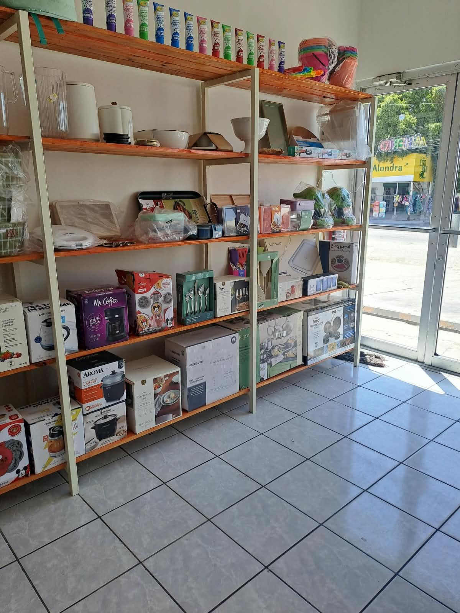
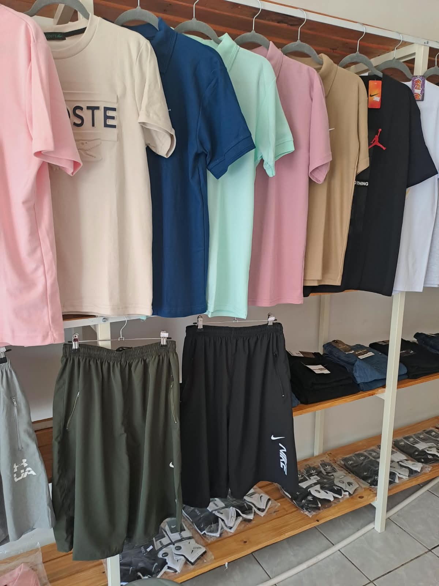
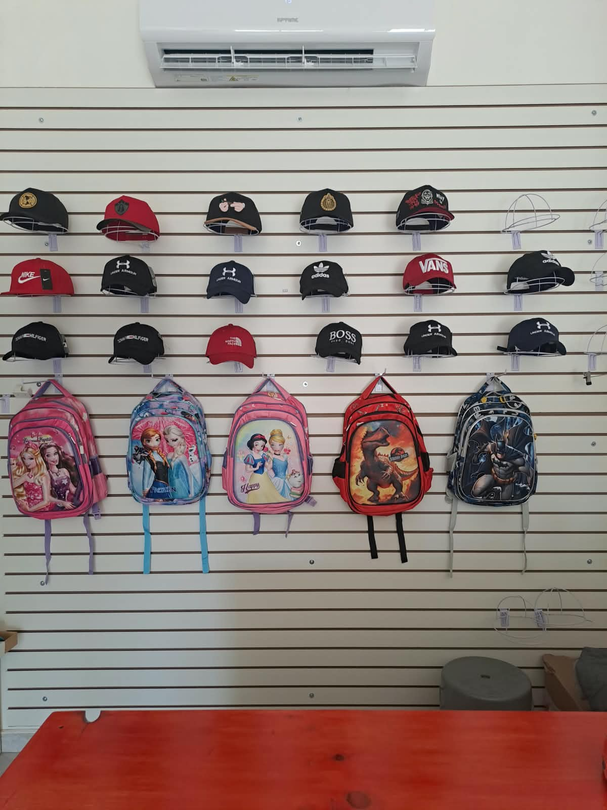
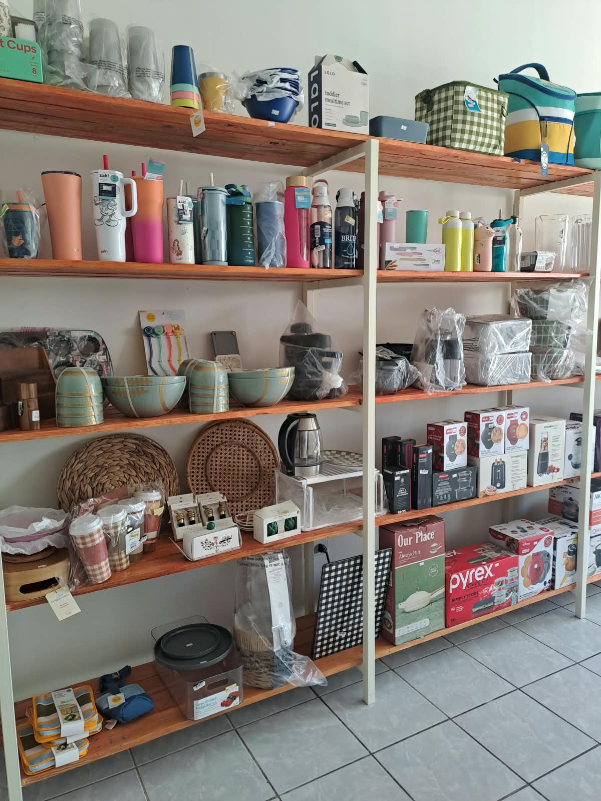
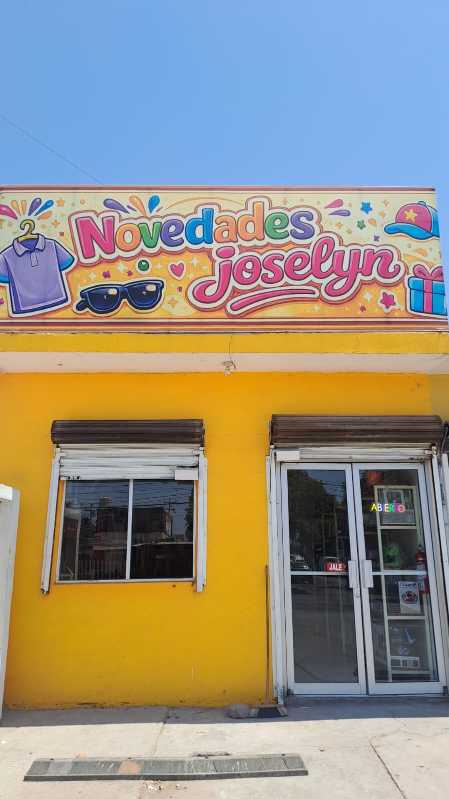
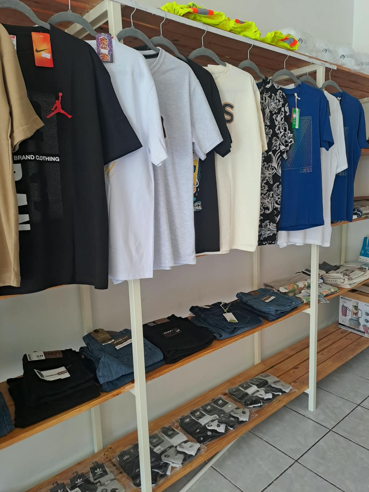
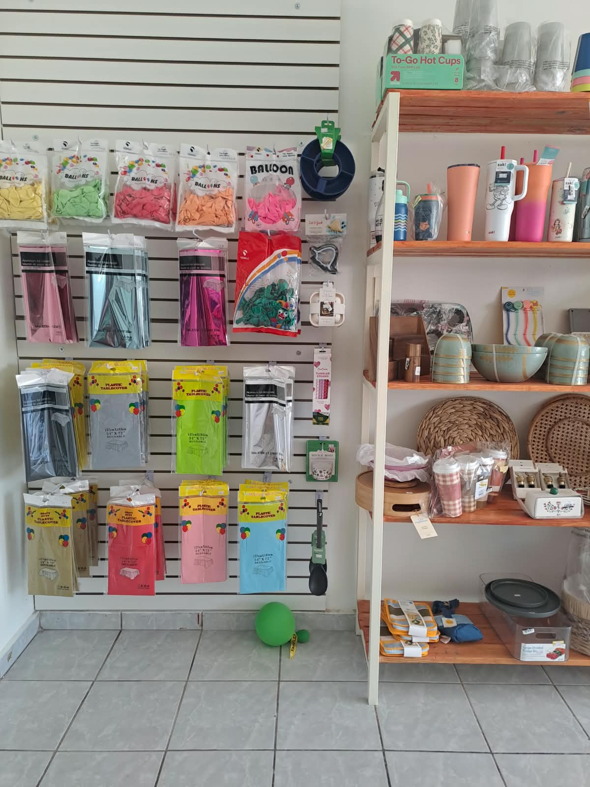

Tienda local para la familia
Todo eso que buscas.
En un lugar cercano.
Encuentra |
Novedades Joselyn reune moda, mochilas, articulos de cocina, hogar y productos utiles para el dia a dia en una experiencia de compra amable, colorida y facil de recorrer.

para explorar
Sobre Novedades Joselyn
Una tienda practica, colorida y cercana para la comunidad.
Novedades Joselyn es un establecimiento pensado para resolver necesidades cotidianas con variedad y trato amable. Su propuesta combina ropa, mochilas, cocina, hogar y productos diversos en un espacio accesible para toda la familia.
Moda casual
Ropa para uso diario, prendas comodas y accesorios que se adaptan a diferentes edades y estilos.
Mochilas y complementos
Opciones practicas para escuela, paseo o regalo, junto con gorras y detalles faciles de elegir.
Cocina y hogar
Articulos utiles, organizadores, vasos, utensilios y novedades para hacer mas facil la vida en casa.
Nuestras secciones
Una vuelta por la tienda puede resolver mucho mas de lo que imaginabas.
Explora un surtido variado para vestir, equipar la casa, encontrar mochilas y llevar detalles practicos para cada ocasion.

Ropa para el dia a dia
Prendas casuales, comodas y faciles de combinar para quienes buscan variedad sin complicarse.
- Playeras, conjuntos y prendas casuales
- Opciones para adultos, jovenes y uso familiar
- Colores neutros, tonos alegres y piezas de temporada
- Complementos utiles como gorras y accesorios

Para escuela, paseo y regalo
Productos practicos para acompanarte todos los dias, con disenos llamativos para chicos y grandes.
- Mochilas con personajes y modelos variados
- Gorras y accesorios para complementar el look
- Detalles ideales para compras rapidas o regalos utiles
- Novedades que cambian segun disponibilidad en tienda

Soluciones utiles para casa
Una seleccion pensada para cocinar, organizar, decorar y facilitar las rutinas del hogar.
- Vasos, termos, recipientes y articulos de cocina
- Utensilios, organizadores y productos de uso diario
- Accesorios para reuniones, mesa y celebraciones
- Productos diversos para descubrir en cada visita
La disponibilidad puede variar por temporada. Visita la tienda y descubre las novedades del dia.
Quiero visitar la tiendaPor que elegirnos
Una experiencia de compra simple, amable y llena de opciones.
Variedad en un solo lugar
Moda, cocina, hogar, mochilas y novedades reunidas para ahorrar vueltas y comprar con calma.
Ambiente colorido
Un local con secciones visibles y una estetica alegre que invita a explorar sin prisa.
Trato cercano
Atencion amable para familias y vecinos que buscan recomendaciones practicas.
Detalles utiles
Productos pensados para resolver necesidades reales: vestir, organizar, regalar y usar todos los dias.
Galeria
Un vistazo a Novedades Joselyn
Fotos reales del local, sus estantes y algunas de las secciones que puedes encontrar al visitarnos.



Visitanos
Ven a descubrir las novedades del dia
El inventario se mueve con la temporada y las necesidades de la comunidad. Pasa por la tienda, recorre las secciones y pregunta por lo que buscas.
-
Busca el local con fachada amarilla y rotulo de Novedades Joselyn.
Av. 13 de Septiembre y de los Juncos #400, Local 3, Fracc. Jardines de Calafia, Mexicali, B.C. - Tel. 686 147 9484
- Ropa, mochilas, cocina, hogar y productos variados en tienda.
- Atencion amigable para familias, vecinos y clientes que buscan comprar facil.